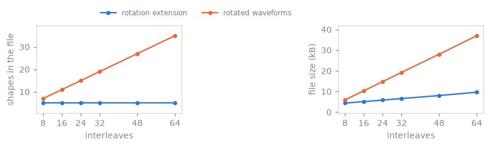

Storage, deduplication and file revisions#
TL;DR
An event is stored as a definition, which holds the timing and shape data, and instances, which hold the playout parameters. The separation allows repeating runs of blocks to be detected, and the SAR check averages over them.
Writing deduplicates: equal shapes and equal events are merged and the block table is renumbered. Registration ids are therefore local to a sequence and are not stable across a write.
With a
ROTATIONSextension per block, a non-Cartesian readout is written once as one interleaf and each shot adds one quaternion, so the shape library stays the size of a single repetition. Any quantity evaluated on played gradient waveforms must apply the block rotation first.The format does not identify repetitions, shots or calibration regions, and records a gradient amplitude limit, slew-rate limit or field strength only where the writer adds the
MaxGrad,MaxSleworB0definition.pypulseqpp.io.read()builds the system from the file;read()takes the rasters from the file and keeps the system the sequence was constructed with.Pulseq 1.5.1 is written by default.
write_v141()folds ppm offsets into absolute offsets and rejects rotation and RF-shim extensions, which revision 1.4.1 cannot express.
The block table of Events and blocks refers to events by id, and the events refer to shapes by id.
Definitions and instances#
Underneath the libraries, an event is stored as a fixed definition together with a set of instances. The definition holds the timing and shape data that does not vary between playouts; each instance holds the playout parameters.
A phase-encode gradient scaled per line is one definition and one instance per line: the shape and the timing are identical and only the amplitude differs. An arbitrary gradient is defined by its time shape and its delay, and its waveform belongs to the instance, so arbitrary gradients that share a time base and a delay share one definition even where their waveforms differ.
For RF events, the magnitude, phase and time shapes belong to the definition; frequency offset, phase offset and amplitude belong to the instance.
This separation allows the package to detect that a run of blocks repeats, which is the repetition the SAR check of Specific absorption rate averages over.
Deduplication#
Two sequences with identical playout can differ substantially in file size, because nothing in the format forces equal events to share a library entry. Writing deduplicates: equal shapes are merged, equal events are merged, and the block table is renumbered.
Registration ids are therefore local to a sequence and are not stable across deduplication. Code that registers an event and retains its id must not assume the id survives a write.
Rotation extensions and the size of the shape library#
A non-Cartesian acquisition plays the same readout at many orientations. There are two ways to express this.
Materializing each orientation writes a separate gradient waveform per shot, so
the shape library grows in proportion to the number of shots. Referring to one
interleaf and attaching a ROTATIONS extension per block writes the waveform
once, and the per-shot cost is one quaternion.

The same spiral acquisition written both ways, at interleaf counts from 8 to 64. A rotation extension per block leaves the shape library the size of one interleaf; a rotated waveform per shot adds a pair of shapes each time, except where a rotation carries one axis onto another and the two files deduplicate as they are written.#
A radial, spiral, PROPELLER or stack-of-stars acquisition designed the second way therefore has a shape library the size of a single repetition, whatever the number of shots, while its block count and its rotation-row count grow with the scan. This is a property of the representation rather than of the trajectory: a zero-echo-time acquisition, whose readout gradient is held across a shell and stepped between views rather than rotated as a fixed interleaf, has a shape library that grows with the view count.
The consequence for analysis is that any quantity evaluated on played gradient waveforms must apply the block rotation first. Gradient, PNS and SAR constraints states this for the constraint checks.
Definitions, sequence chains and the signature#
[DEFINITIONS] is free-form key/value metadata. A few keys are conventional:
FOV, Name, the raster times and TotalDuration. The rest are chosen by
whoever writes the file. The shipped sequence implementations record the
prescription and the k-space geometry a reconstruction requires: the matrix
size, the echo and repetition times, the index of the k-space centre line and
sample, and the slice positions.
NextSequence links files into a chain. A calibration prescan and the imaging
scan it belongs to are two files played in order rather than one file with a
mode flag, which write()
produces from an application’s
prescans(), and which keeps each file a
single repeating unit.
[SIGNATURE] closes the file with an MD5 digest of everything above it, so a
reader can establish that the file is the one that was written.
Information outside the format#
The format states the playout order and nothing above it. Nothing in the file
identifies which run of blocks is a repetition, which events belong to one
shot, or which acquisitions form a calibration region. A consumer that requires that
structure derives it from the content. The repetition detection underlying the
SAR check, repetition(), does exactly that, and the
shipped sequences record their encoding indices as labels rather than leaving a
consumer to infer them.
The same applies to the system a sequence was designed against. A file records
the four rasters; it records a gradient amplitude limit, a slew-rate limit or a
field strength only where the writer adds the MaxGrad, MaxSlew or B0
definition, and it records no dead times.
read() takes the rasters from the file and keeps the
system the sequence was constructed with. pypulseqpp.io.read() builds the
system from the file instead, so the design helpers and the checks of
Gradient, PNS and SAR constraints apply limits derived from the file rather than those of
the shared default system.
Revisions and the binary form#
pypulseqpp writes Pulseq 1.5.1 by default.
Revision 1.4.1, which write_v141() produces, has no
column for an RF centre time or use, no gradient endpoint amplitudes and no
ppm offsets. The writer folds a ppm offset into an absolute offset using the
gyromagnetic ratio in Hz/T and the field strength in tesla, warns when it omits
a soft delay, and rejects a sequence containing rotation or RF-shim extensions,
which that revision cannot express.
Reading accepts earlier revisions. Legacy text conversion derives the RF centre
times, gradient endpoint amplitudes and pre-1.4 block durations the file does
not state; an RF use that is absent remains undefined rather than being
inferred.
The binary form, write_binary(), holds the same
content in a different encoding: records are little-endian, times are integer
picoseconds and shape samples are float32. Both forms support an optional MD5
signature.
See also#
Events and blocks — the block table and the event kinds.
Timing and rasterization — quantization of event times.
Sequence and system limits — the container, its readers and its writers.